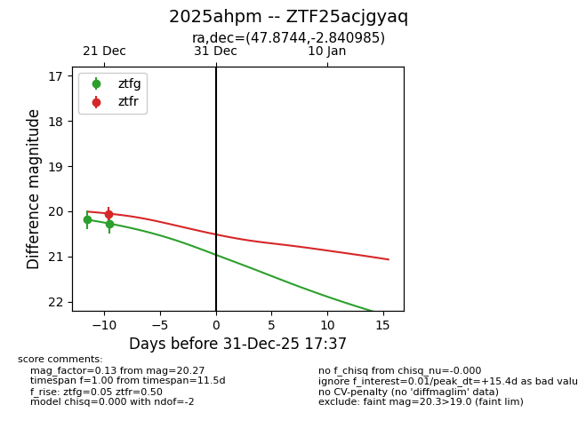
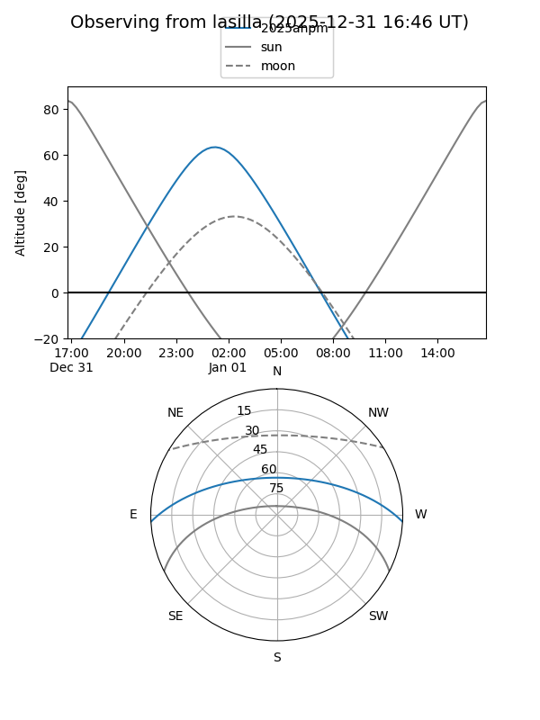
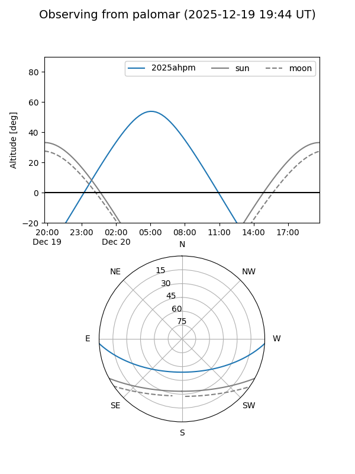

2025ahpm
Target 2025ahpm at 2025-12-31 17:00
Aliases and brokers:
FINK:
Lasair:
ALeRCE:
TNS:
YSE:
alt names
ZTF25acjgyaq (ztf,fink_ztf)
2025ahpm (tns,yse)
Coordinates:
equatorial (ra, dec) = 47.8744,-2.84099
equatorial (HMS+DMS) = 03:11:29.85,-02:50:27.55
galactic (l, b) = (183.0813,-48.64303)
Flags:
Photometry:
last ztfg=20.27, ztfr=20.05
2 ztfg, 1 ztfr detections
Lightcurve

Visibility


Additional plots